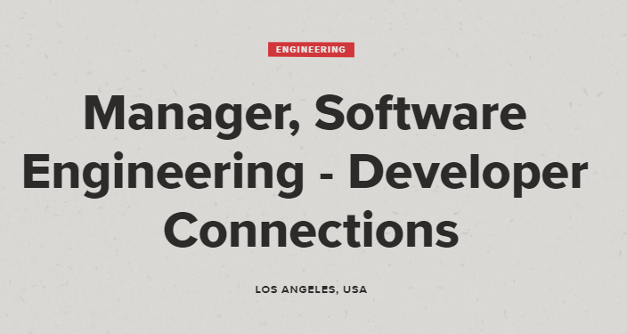

Manager, Software Engineering Developer
This position as a Manager, Software Engineering on Devcon which requires me to manage one or more teams of software engineers is appealing to me because of its honor, perks and pay. To be that experienced that you could lead a team of software engineers because of how advanced and deep your experience is, is crazy to me, and it is somewhere that I want to be in the future. The job requires me to have at least 7 years of experience working as a software engineer, 2 years of experience working in an engineering leadership position and for me to be proficient with Scrum/Agile development models. I have worked under a waterfall model before, in my software development class in high school, so I have barely scratched the surface, but I obviously have a long way to go in order to get to that point. The skills I currently have, are almost non-existent when looking at that job posting. I know basic python, basic vb.net, barely the basics of html/css. I am not really qualified at all for any programming job although I do believe that I can quickly learn these things, I just need to be pushed to do it. I have a bit of experience though, I took a software development class in year twelve where I would have to read pseudocode and troubleshoot, work with excel, gather information with surveys and learnt about big data, work on a project under the waterfall development model which needed a functional program that didn’t face any errors. The plan to gather the skills and experience to work at a position like this for me is to just keep working hard in this course at the moment, working on programming at home, making sure that I ask questions and work on a wide range of tasks. I believe that If I just stick to it, and find myself a job in this industry, I can climb the ranks slowly, and gather the skills and experience required to then get a job like this.